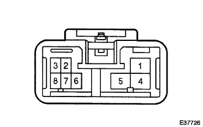

エアコンディショナ コントロールASSY 単体点検 |
| 1. エアコンディショナ コントロールASSY点検（Ａ／Ｃマニュアル） |
|  |
導通点検
SST(トヨタエレクトリカルテスター)を使用して、ブロワスイッチを操作したときの、コネクタ各端間の導通を点検する。
| スイッチ | 端子番号 | 導通 |
|---|---|---|
| OFF | 1(M2)←→2(M1)←→4(H1)←→5(E)←→6(C1) | 導通なし |
| LO | 5(E)←→6(C1) | 導通あり |
| M1 | 5(E)←→2(M1)←→6(C1) | 導通あり |
| M2 | 5(E)←→1(M2)←→6(C1) | 導通あり |
| H1 | 5(E)←→4(HI)←→6(C1) | 導通あり |
イルミネーション点検
コネクタの8(ILL+)端子にバッテリーのプラス、3(ILL-)端子にバッテリーのマイナスを接続し、点灯することを確認する。
ヒータスイッチ(寒冷地仕様車)導通点検
SST(トヨタエレクトリカルテスター)を使用して、内外気切り替えレバー操作時のコネクタ各端子間の導通を点検する。